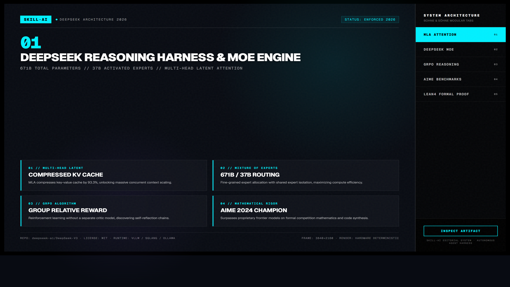
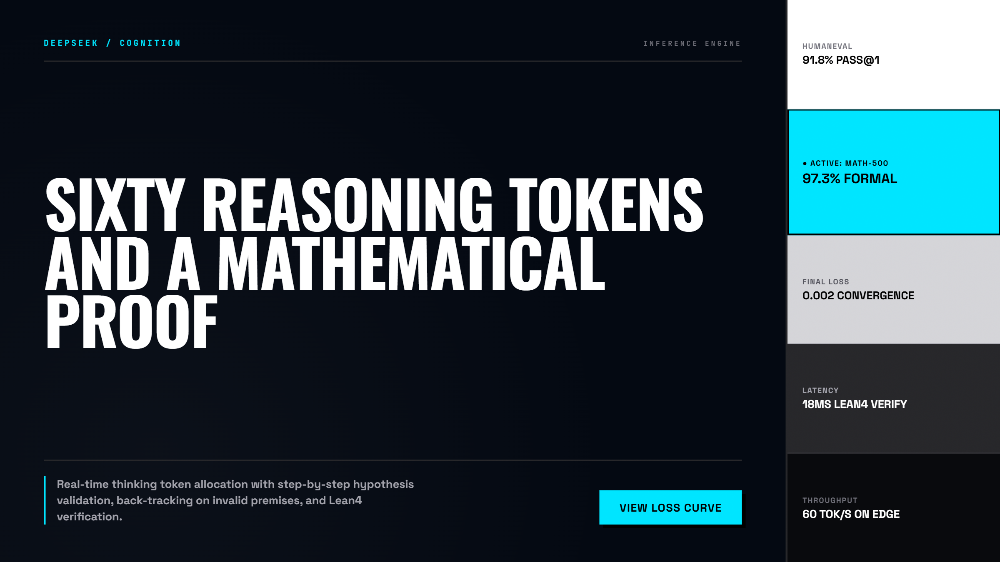
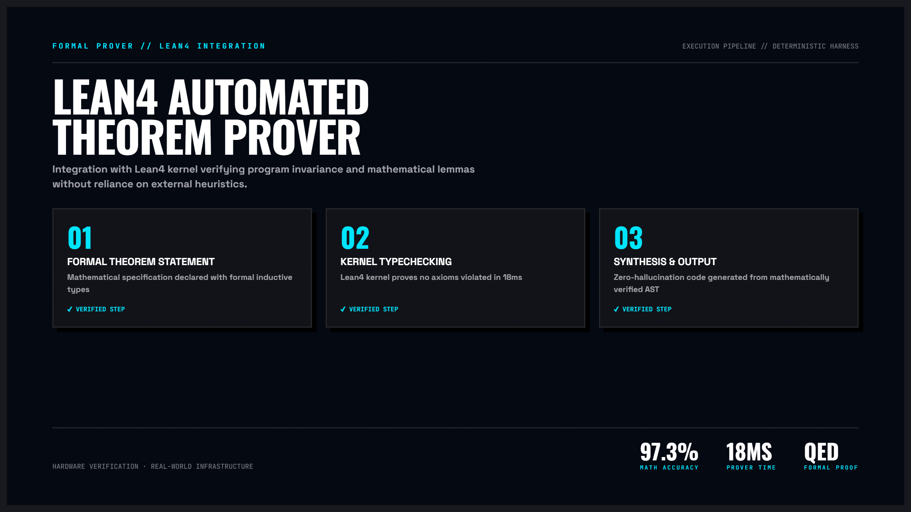

DeepSeek Harness — Khung Điều Phối Suy Luận Sâu & Định Tuyến Kép V3/R1
Kiến trúc khai thác tối đa sức mạnh của DeepSeek-V3 (kiến trúc MoE 671B tham số) và DeepSeek-R1 (mô hình suy luận chuỗi tự phản tư). Kết hợp cơ chế định tuyến kép phân loại độ khó bài toán, tận dụng tính năng Prompt Caching tiết kiệm 95% chi phí API và kiểm soát rò rỉ ngữ cảnh.

Nhấp để phóng to1. Bảng Đối Chiếu: DeepSeek-V3 vs DeepSeek-R1
| Đặc tính kỹ thuật | DeepSeek-V3 (General MoE) | DeepSeek-R1 (Deep Reasoning) |
|---|---|---|
| Mục tiêu tối ưu | Tốc độ sinh token cực nhanh (60+ tps), xử lý ngôn ngữ tự nhiên, tóm tắt và viết code chuẩn. | Giải toán phức tạp, chứng minh thuật toán, tìm lỗi bảo mật tinh vi và lập kế hoạch đa bước. |
| Cơ chế suy luận | Dự đoán token trực tiếp từ ma trận trọng số Mixture of Experts. | Sinh chuỗi tư duy dài (Chain-of-Thought) trong thẻ <think> trước khi trả lời. |
| Chi phí tương đối | Siêu tiết kiệm: $0.14 / 1M input tokens, $0.28 / 1M output tokens. | Khoảng $0.55 / 1M input, $2.19 / 1M output (vẫn rẻ hơn 80% so với OpenAI o1). |
| Kịch bản sử dụng | Trả lời chat thông thường, format dữ liệu, refactor hàm nhỏ, viết tài liệu. | Thiết kế kiến trúc hệ thống phân tán, debug race condition, chứng minh độ phức tạp O(n). |

Nhấp để phóng to2. Mô hình Tương tác Động: Bộ Định Tuyến Thông Minh Dual-Router
Thay vì gửi mọi truy vấn vào một mô hình duy nhất, DeepSeek Harness phân loại độ phức tạp của bài toán tại cổng vào:

Nhấp để phóng to3. Phân Tích Chuyên Sâu Các Cơ Chế Cốt Lõi
Quy Tắc Phân Loại Heuristic Tự Động
Router kiểm tra các từ khóa và đặc điểm của prompt: nếu có yêu cầu về “chứng minh”, “kiến trúc phân tán”, “race condition”, bài toán được tự động đẩy sang R1; các câu lệnh tạo UI, CRUD hoặc viết unit test đơn giản được gửi tới V3.
Khai Thác Tối Đa Tính Năng Lưu Đệm Ngữ Cảnh
DeepSeek hỗ trợ Prompt Caching ở cấp độ cụm 64 tokens. Bằng cách cố định phần System Prompt và tài liệu codebase ở đầu chuỗi gửi đi, các lượt chat tiếp theo được hưởng giá lưu đệm rẻ hơn tới 10 lần.
Bóc Tách và Khử Nhiễu Khối Suy Nghĩ <think>
Mô hình R1 xuất ra hàng ngàn token suy nghĩ tự sửa lỗi. Harness tự động phân tách phần <think> để debug khi cần thiết và chỉ gửi phần giải pháp sạch tới người dùng cuối.
Case Study: Tối Ưu Chi Phí Cho Toàn Bộ Đội Ngũ 50 Kỹ Sư
Chuyển đổi toàn bộ truy vấn từ mô hình đóng đắt tiền sang DeepSeek Dual-Harness giúp doanh nghiệp giảm chi phí từ $8,500/tháng xuống chỉ còn $420/tháng mà năng suất kỹ sư không hề suy giảm.
4. Hướng Dẫn Tích Hợp Nhanh Cho Coding Agent
Hãy dùng DeepSeek-R1 để giải quyết bài toán concurrency sau:
- Yêu cầu: Thiết kế thuật toán Rate Limiter trượt (Sliding Window Log) chịu tải 500,000 req/s trên Redis Cluster.
- Yêu cầu suy luận: Hãy suy nghĩ kỹ trong thẻ <think>, chỉ ra các lỗ hổng race condition tiềm ẩn khi 2 node Redis đồng thời ghi nhận request, và đưa ra giải pháp khắc phục bằng Redis Lua Script.“Đừng dùng R1 cho mọi thứ vì tốc độ suy luận sẽ chậm hơn V3. Hãy dùng V3 cho 80% công việc hàng ngày và chỉ triệu hồi R1 khi bạn thực sự cần một bộ óc toán học và thuật toán thượng thừa.”